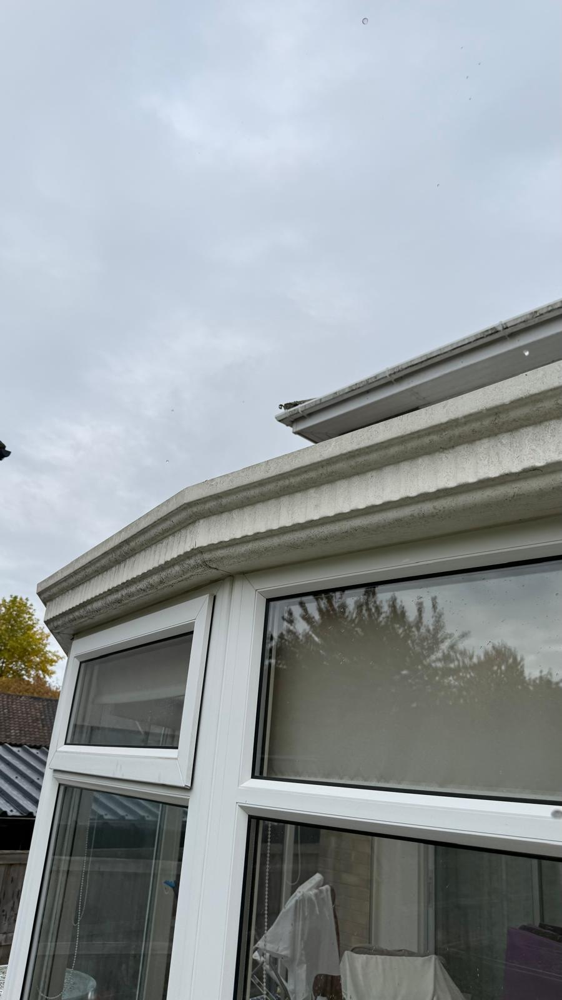
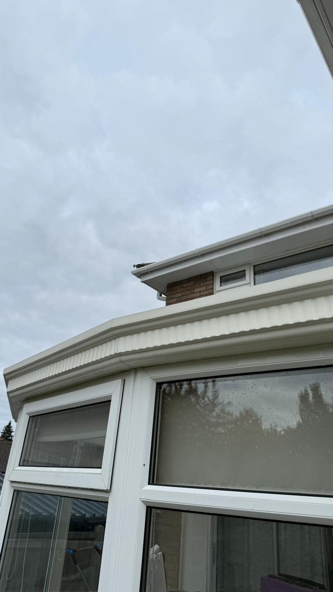

Conservatory Cleaning — Norfolk & Suffolk
Expert conservatory roof, glass and frame cleaning across Norfolk & Suffolk. Our gentle soft-wash approach removes moss, algae and grime without damaging seals or coatings, improving natural light and extending the life of your conservatory in Lowestoft, Beccles, Great Yarmouth and Norwich.
Our conservatory services
- Soft-wash roof cleaning to protect seals and coatings
- Glass cleaning inside/out where accessible
- Frame, cill and gutter clearing to reduce leaks
- Safe working at height and protective measures
We offer domestic and small commercial conservatory cleaning with flexible scheduling and clear pricing. Photos are provided on completion so you can see the difference.
Book a conservatory clean — 01502 819618

